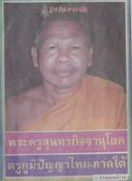
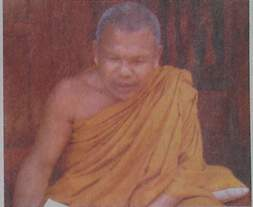

|
������������������เมื่อวันที่
๑๔ กุมภาพันธ์ ๒๕๔๘ เป็นวาระครบ ๔๙ ปี ของการก่อตั้งสำนักงานเลขาธิการสภาการศึกษา
(สกศ.) กระทรวงศึกษาธิการ และประกาศเกียรติคุณยกย่องครูภูมิปัญญาไทยสร้างเสริมทุนภูมิปัญญาชาติ
รุ่นที ๔ จำนวน ๘๖ คน
������������������๑
ใน ๘๖ คน เป็นพระเถระนักพัฒนารูปหนึ่งแห่งจังหวัดพัทลุง นาม "พระครูสุนทรกิจจานุโยค"
ที่ได้รับการยกย่องเชิดชูเกียรติ เป็นครูภูมิปัญญาไทย ภาคใต้ ด้านการจัดการทรัพยากรธรรมชาติและสิ่งแวดล้อม
������������������พระครูสุนทรกิจจานุโยค
(พล่อง เตชปัญโญ) เจ้าคณะตำบลตะโหมด และรองเจ้าอาวาสวัดตะโหมด อ.ตะโหมด
จ.พัทลุง ปัจจุบันอายุ ๕๔ ปี พรรษา ๓๔
������������������ถือกำเนิดเมื่อวันที่
๑๖ มิถุนายน ๒๔๙๔ ที่บ้านตะโหมด หมู่ที่ ๓ ต.ตะโหมด อ.ตะโหมด จ.พัทลุง
เป็นบุตรคนสุดท้องในจำนวนพี่น้อง ๗ คน
������������������ชีวิตวัยเยาว์
หลังจากเรียนจบชั้นประถมศึกษาปีที่ ๔ (การศึกษาภาคบังคับในขณะนั้น)
ก็ออกมาทำงาน เลี้ยงวัว ทำนาช่วยเหลือครอบครัว พ่อแม่ผู้ปกครอง
������������������กระทั่งอายุครบ
๒๐ ปี เมื่อปี พ.ศ. ๒๕๑๔ ได้รับการอุปสมบทที่วัดตะโหมด ต.ตะโหมด อ.ตะโหมด
จ.พัทลุง โดยมี พระครูวิลาศวรัญญู วัดควนปิยาราม อ.ปากพะยูน จ.พัทลุง
เป็นพระอุปัชฌาย์, พระครูสถิตธรรมาขันธ์ วัดนิโครธาราม อ.เมืองฯ จ.พัทลุง
เป็นพระกรรมวาจาจารย์, และ พระครูอุทิศกิจจาทร วัดตะโหมด ต.ตะโหมด
อ.ตะโหมด จ.พัทลุง เป็นพระอนุสาวนาจารย์ ได้รับฉายาว่า "เตชปัญโญ
แปลว่า ผู้มีปัญญาเป็นเดช"
������������������ก่อนที่จะบวชเรียน
โยมพ่อได้นำตัวไปฝากวัด เพื่อให้ศึกษาอบรมตามแบบวิถีชีวิตลูกผู้ชายชาวพุทธ
ก่อนออกจากบ้านไปอยู่วัด โยมแม่ได้พูดไว้ว่า "แม่จะบวชลูกคนสุดท้องแล้ว
ขอให้บวชในพระพุทธศาสนาให้นาน ๆ อย่างน้อยสัก ๕ พรรษา ให้เท่ากับลูกของแม่คนหัวปี
และให้เรียนสวดพระปาติโมกข์ให้แม่ด้วย พ่อแม่ตายไปจะได้ไม่ตกนรก"
ด้วยความกตัญญูต่อบุพพการีอย่างที่สุด ท่านตกปากรับคำทันทีโดยไม่ลังเลใจ
������������������เมื่อบวชแล้ว
พระพล่อง ปฏิบัติธรรมและตั้งใจเรียนตามกฏเกณฑ์วัดทุกประการ และสอบได้นักธรรมชั้นตรี
โท และ เอก ตามลำดับ พร้อมท่องสวดพระปาติโมกข์ไปด้วย เพียง ๔๕ วัน
ก็สมารถจำได้อย่างแม่นยำ สมความปรารถนาของโยมแม่ และในปี พ.ศ. ๒๕๒๖-๒๕๒๘
เข้าศึกษาโครงการต่อเนื่องของมหาวิทยาลัยสุโขทัยธรรมาธิราช (มสธ.)
และสอบได้สัมฤทธิบัตร

������������������จากการได้ฝึกฝนจากพระครูอุทิศกิจจาทร
เจ้าอาวาสวัดตะโหมด ที่มุ่งสอนให้เห็นประโยชน์ส่วนรวมมากกว่าส่วนตัวและให้ตระหนักว่าชีวิตพระสงฆ์สามารถทำคุณประโยชน์และเป็นที่พึ่งพาให้แก่ชาวบ้านได้มากที่สุดตามแนวของพระภิกษุสงฆ์โดยทั่วไป
������������������เมื่อระลึกได้เช่นนี้
จึงบังเกิดความแน่วแน่จะขออยู่ที่วัดตะโหมด ช่วยเหลือพี่น้องชาวบ้านให้สุดความสามารถตามกำลังจะช่วยได้
โดยไม่ไปไหน และได้เป็นครูสอนพระปริยัติธรรมประจำสำนักศาสนศึกษาวัดตะโหมดตลอดมา
������������������ปี
พ.ศ. ๒๕๒๑ พระครูสุนทรกิจจานุโยค เป็นกำลังสำคัญในการช่วยเหลือพระอาจารย์พระครูอุทิศกิจจาทร
สร้างโรงเรียนประชาบำรุง และเปิดการเรียนการสอนธรรมศึกษาแก่นักเรียนโรงเรียนประชาบำรุงจนถึงปัจุบัน
และช่วยพัฒนาชุมชนและสังคมมาโดยตลอด มีความตั้งใจที่จะให้วัดเป็นศูนย์รวมใจในการพัฒนา
และแก้ไขปัญหาของชุมชน และองค์กรสภาลานวัดก่อกำเนิดขึ้น เมื่อปี พ.ศ.
๒๕๓๘ โดยมีบ้าน วัด และส่วนราชการ ร่วมคิด ร่วมทำ และร่วมภาคภูมิใจในความเป็นชุมชน
������������������จัดวางโครงสร้างพัฒนา
แก้ไขปัญหาหลัก ๔ ฝ่าย คือ ฝ่ายสังคมช่วยทำสังคม ฝ่ายเศรษฐกิจส่งเสริมการผลิตและการตลาด
ฝ่ายการศึกษา ศาสนาและวัฒนธรรมและฝ่ายสิ่งแวดล้อม โดยพระครูสุนทรกิจจายุโยคได้รับความไว้วางใจเป็นประธานสภาลานวัดตะโหมด
������������������ตำแหน่งและผลงานเด่นในการทำงานพัฒนาสังคมและชุมชน
พระครูสุนทรกิจจานุโยค เป็นผู้มีความรู้ ความสามารถหลายด้าน เช่น
������������������-เป็นประธานศูนย์วัฒนธรรมบ้านตะโหมด
�������������������-เป็นประธานสภาลานวัดตะโหมด
������������������-เป็นรองประธานคณะกรรมการสถานศึกษาโรงเรียนประชาบำรุง
������������������-เป็นรองประธานคณะกรรมการสถานศึกษาโรงเรียนวัดตะโหมด
������������������-เป็นรองประธานคณะกรรมการสถานศึกษาโรงเรียนป่าบอนพิทยาคม
������������������-เป็นพระธรรมทูตปฏิบัติการอำเภอตะโหมด
������������������-เป็นพระนักเทศน์ต้นแบบจังหวัดพัทลุง
������������������-เป็นรองเจ้าอาวาสวัดตะโหมด
������������������-เป็นเจ้าคณะตำบลตะโหมด
������������������-เป็นวิทยากรเรื่องบทบาทและการมีส่วนร่วมในการจัดการศึกษาพัฒนาชุมชนและสังคมแก่นิสิต
นักศึกษาระดับบัณฑิตศึกษา สาขาวิชาการบริหารการศึกษา คณะศึกษาศาสตร์
มหาวิทยาลัยทักษิณ
�������������������-เป็นผู้สอบได้ชุดวิชามนุษย์กับสังคม
ตามหลักสูตรปริญญาตรี สาขาวิชาศิลปศาสตร์
������������������-เป็นพระครูสัญญาบัตร
ที่พระครูสุนทรกิจจานุโยค เมื่อ พ.ศ. ๒๕๔๐
������������������-ได้เลื่อนสมณศักดิ์เป็นพระครูสัญญาบัตรเจ้าคณะตำบล
ในพระราชทินนามเดิม เมื่อวันที่ ๑ มีนาคม ๒๕๔๓

เครื่องราชอิสริยาภรณ์
เกียรติคุณ และรางวัลที่เคยได้รับ ประกอบด้วย
�������������������������������������-สัมฤทธิบัตรจากมหาวิทยาลัยสุโขทัยธรรมาธิราช
ปี ๒๕๒๖ ชุดวิชามนุษย์กับสังคม, ปี ๒๕๒๗ ชุกวิชามนุาย์กับอารยธรรม
(สอบได้เกียรตินิยม), ปีการศึกษา ๒๕๒๘ ชุดวิชาภาษาไทย,
������������������������������������-ปี
พ.ศ. ๒๕๔๐ ได้รับพระราชทานสมณศักดิ์เป็นพระครูสุนทรกิจจานุโยค,
������������������������������������-ปี
พ.ศ. ๒๕๔๓ ได้รับแต่งตั้งให้ดำรงตำแหน่งเจ้าคณะตำบลตะโหมด
นอกจากนี้ ยังได้ทำให้วัดตะโหมดได้รับรางวัลอีกมากมาย เช่น
������������������������������������ปี
พ.ศ. ๒๕๓๐ ได้รับคัดเลือกจากกรมการศาสนาประกาศให้เป็นวัดพัฒนาตัวอย่างดีเด่น
������������������������������������ปี
พ.ศ. ๒๕๔๖ เป็นหน่วยอบรมประชาชนดีเด่นภาคใต้ และ
������������������������������������ปี
พ.ศ. ๒๕๔๗ เป็นแหล่งเรียนรู้ดีเด่นระดับประเทศ
������������������พระครูสุนทรกิจจานุโยค
เป็นพระนักคิด นักทำ เป็นผู้นำทางความคิด เป็นผู้ริเริ่มกระตุ้นใก้ชุมชนได้คิดเรื่องการจัดการทรัพยากรธรรมชาติและสิ่งแวดล้อม
"ก่อนหน้านี้ ชุมชนบ้านตะโหมดมีความอุดมสมบูรณ์ทางธรรมชาติมากมาย
แต่หลังจากมีคนอพยพเข้ามาอยู่ในชุมชนเป็นจำนวนมาก การบุกรุกพื้นที่ป่าสงวนฯ
โค่นตัดไม้ทำสวนยางขยายตัวอย่างไม่หยุดยั้ง พอมีคนหนึ่งทำก็จะมีคนทำตามบ้าง
จนป่าต้นน้ำและสภาพนิเวศน์ในตะโหมดเริ่มถูกทำลายลงไป"
ต่อมาเกิดความคิดในการกอบกู้สิ่งแวดล้อมในชุมชนตะโหมด เห็นว่าขืนปล่อยไว้ธรรมชาติคงจะย่อยยับ
������������������วัดและชาวบ้านจึงเดินหน้าลงมือดำเนินการจัดระบบทรัพยากรธรรมชาติของชุมชนใหม่
โดยอาศัยศรัทธาที่มีอยู่เดิมของชาวบ้านที่มีต่อวัดและให้ความเคารพเชื่อฟังพระ
������������������"อาตมาได้นำชาวบ้านและนักเรียนกว่า
๔๐๐ คน ไปช่วยกันรณรงค์การจัดการธรรมชาติและสิ่งแวดล้อม จัดตั้งกลุ่มอนุรักษ์ธรรมชาติท้องถิ่น
ดูแลห้วย หนอง คลอง บึง และป่าไม้ ให้การปกป้องและคอยชี้แนะผู้ที่ตัดไม้ว่า
ถ้ายังตัด ยังโค่นกันต่อไปไม่หยุด ธรรมชาติจะตกอยู่ในภาวะอันตราย พื้นที่ที่เคยแผ้วถางใช้ทำมาหากินก็มีเพียงพอแล้ว
อย่าหักถางเพิ่มขึ้นเลย ให้ยึดทฤษฎีชุมชนพอเพียงตามพระราชดำรัสของในหลวง
ซึ่งทุกคนให้ความร่วมมือเป็นอย่างดี การตัดไม้ก็ลดลง ธรรมชาติก็ดีวันดีคืน
ด้วยความร่วมมือร่วมใจจากทุกฝ่าย"
������������������ผลงานอย่างเป็นรูปธรรมของพระครูสุนทรกิจจานุโยค
ทำให้สำนักงานเลขาธิการสภาการศึกษา ประกาศเกียรติคุณยกย่องเป็น "ครูภูมิปัญญาไทย
ประจำปี ๒๕๔๘" อีกด้วย
������������������"เมื่อเราอาศัยอยู่ที่นี่
จะทำอย่างไรให้ท้องถิ่นเจริญอย่างยั่งยืนและเป็นที่พึ่งของชาวบ้านได้
รักษาคุณงามความดี ไม่ต้องไปสร้างอะไร ขอให้รักษาของเก่าที่บรรพบุรุษสร้างเอาไว้
ชีวิตเราก็จะอยู่อย่างเป็นสุข"
|